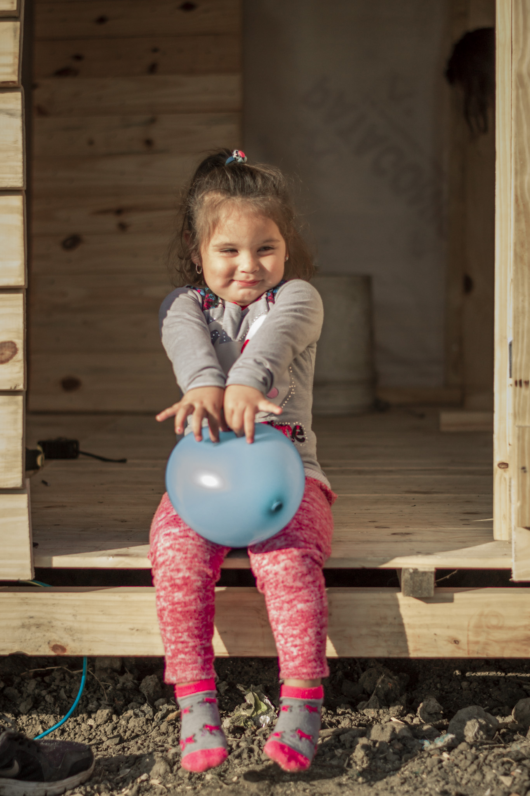

<div style="overflow-x: hidden; background-color: #fff;">
    <div class="loading" *ngIf="loading">
        <mat-spinner diameter=50></mat-spinner>
    </div>
    <div *ngIf="!loading">
        <div>
            <button class="arrow" matTooltip="Volver atrás" routerLink="/home-socios"> 
                <mat-icon>arrow_back</mat-icon> 
            </button>
        </div>
        <div class="row">
            <div class="col-md-12 col-md-offset-3">
                <form [formGroup]="solicitudBaja" id="msform">
                    <!-- progressbar -->
                    <ul id="progressbar">
                        <li [ngClass]="step>=1 ? 'active ' : 'inactive'"></li>
                        <li [ngClass]="step==2 ? 'active' : 'inactive'"></li>
                    </ul>
                    <!-- fieldsets -->
                    <fieldset *ngIf="step == 1">
                        <h2 class="title">Cese de donación</h2>
                        <div class="caja_baja">
                            
                            <div class="texto_solicitud">
                                <h4 class="texto_cuadro1">¡Lamentamos que quieras terminar este vínculo tan lindo!</h4>
                                <h6 class="texto_cuadro2">Si solicitas el cese de donación, dejarás de aportar para transformar la realidad
                                    de miles de familias en Asentamientos.
                                </h6>
                            </div>
                        </div>
                        <div class="preguntas">
                            <h4>¿Por qué decidiste discontinuar tu aporte?</h4>
                            <h4>¿Hay algo que podamos hacer mejor?</h4>
                        </div>
                        <textarea class="textarea" type="text"
                            formControlName="razon" rows="10" cols="70"
                            [ngClass]="{ 'is-invalid': personal_step && personal.razon.errors }"
                            placeholder="Escribí aca la razón de tu pedido de baja">
                        </textarea>
                        <div *ngIf="personal_step && solicitudBaja.controls.razon.errors">
                            <div *ngIf="personal.razon.errors?.required" class="requerido">Por favor, se requiere que escriba la razón de su cese de donación.</div>
                        </div>
                        <div class="input_sig">
                                <button class=" buttonn" routerLink="/home-socios">Volver</button>
                                <button class="button" (click)="next()" type="button">Siguiente</button>
                        </div>
                    </fieldset>
                </form>
                <div id="msform">
                    <fieldset *ngIf="step == 2">
                        <div class="caja_baja">
                            
                            <div class="texto_solicitud">
                                <h3 class="texto_cuadro1">Tu donación</h3>
                                <h6 class="texto_cuadro2">está haciendo la diferencia en más de 84 barrios populares
                                    en Argentina. Te vamos a extrañar si decidís dejarnos.<br> ¿Estas seguro
                                    de querer continuar con el proceso?
                                </h6>
                            </div>
                        </div>
                        <div class="posicion">
                            <button  class="buttonn" (click)="previous()" type="button">Volver</button>
                            <button class="button" (click)="enviarBaja()" type="button">Enviar</button>
                        </div>
                    </fieldset>
                </div>
            </div>
        </div>
    </div>
</div>
